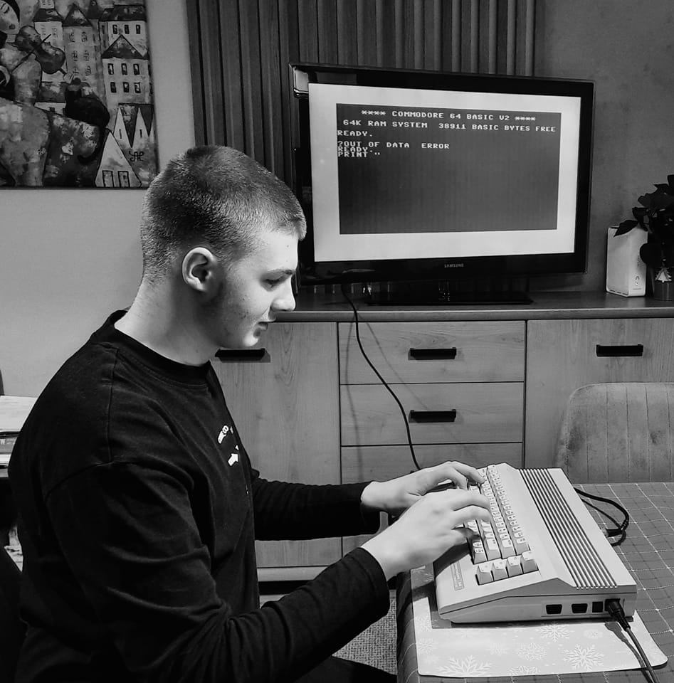

My name is Dominik Śliwiński. I study computer science. I also like mathematics. I have an interest in linguistics (I speak Polish, English, German and Japanese). I have a lot of random nerdy thoughts. I am the creator of RaidouOS, a toy operating system running in kernel mode.
